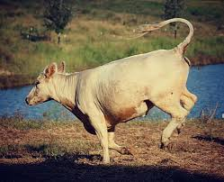
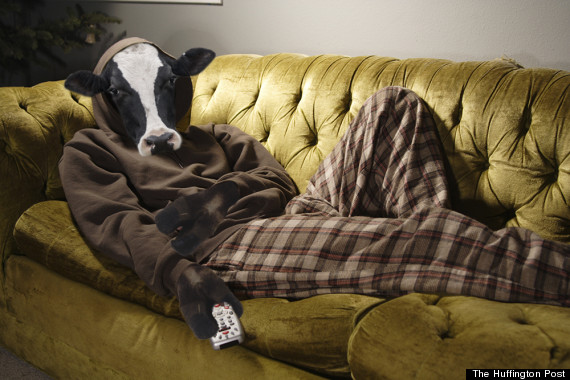
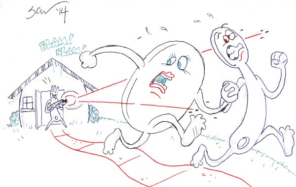

Someone once told cows they could jump. They were wrong.
This doesn't stop cows from trying to jump over the moon.
Dozens of cows a year suffer PTSD from their failed attempts.
They should follow the quick brown fox's example and stick to lazy dogs.
It's not enough for the cow to be humiliated in his moon-jumping endeavors?
If you or a cow you love have been injured in a moon jumping accident contact the cow surgeon